漏洞是指一个系统存在的弱点或缺陷，系统对特定威胁攻击或危险事件的敏感性，或进行攻击的威胁作用的可能性。按照危害也被分为高、中、低三种。
低危
X-Frame-Options Header未配置
查看请求头中是否存在X-Frame-Options Header字段
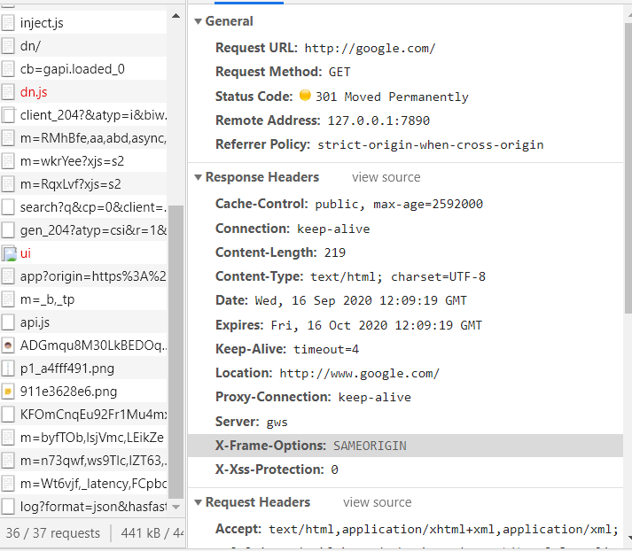
会话Cookie中缺少secure属性(未设置安全标志的Cookie)
当cookie设置为Secure标志时，它指示浏览器只能通过安全SSL/TLS通道访问cookie。
未设置HttpOnly标志的Cookie
当cookie设置为HttpOnly标志时，它指示浏览器cookie只能由服务器访问，保护cookie而不能由客户端脚本访问。
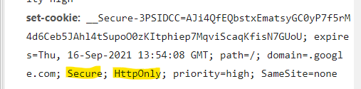
可能的敏感文件
这个洞有高危有低危，如果数据中存在账号密码等重要信息并且关联起来，可算高危。如果只是文件路径，或者一些普通信息，算低危~高危
中危
启用TLS 1.0
攻击者可能能够利用此问题进行中间人攻击，并对受影响的服务和客户端之间的通信进行解密。PCI安全标准委员会规定2018年6月30日之后，开启TLS1.0将导致PCI DSS不合规。
可以使用myssl来辨认。
baidu.com
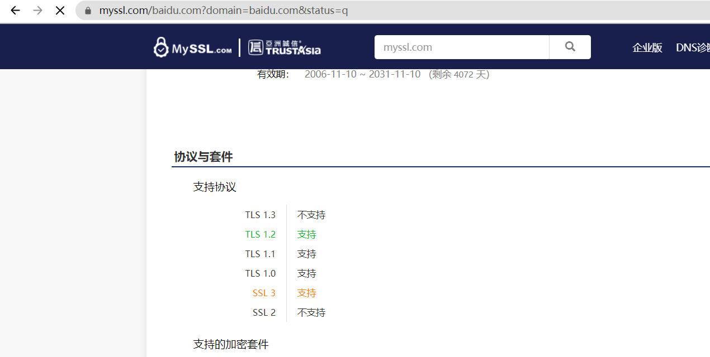
使用RC4密码套件
攻击者可以在特定环境下只通过嗅探监听就可以还原采用RC4保护的加密信息中的纯文本，导致账户、密码、信用卡信息等重要敏感信息暴露，并且可以通过中间人进行会话劫持。
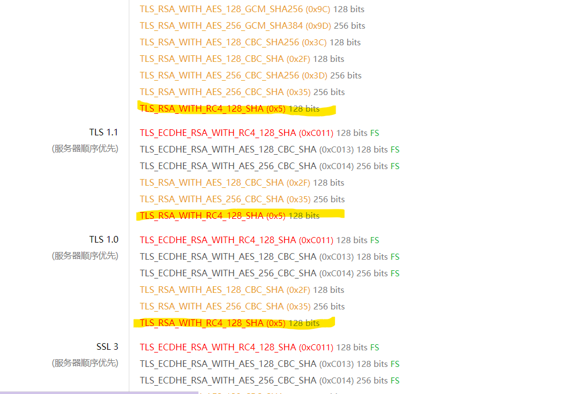
存在POODLE攻击(启用了SSLv3协议)
攻击者可能窃取客户端与server端使用SSLv3加密通信的明文内容
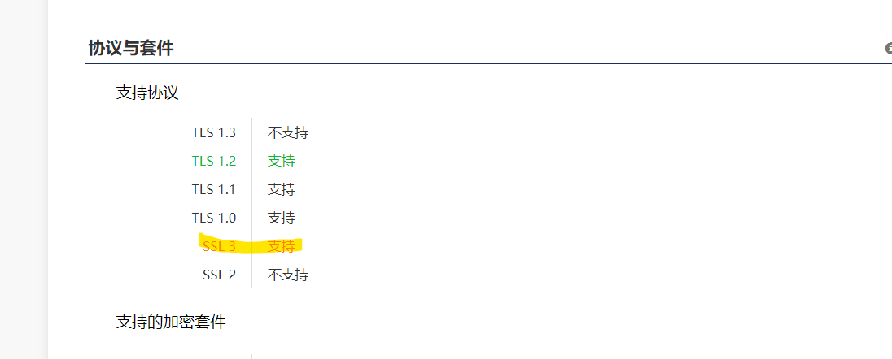
没有CSRF保护的HTML表单
攻击者通过一些技术手段欺骗用户的浏览器去访问一个自己曾经认证过的网站并运行一些操作（如发邮件，发消息，甚至财产操作如转账和购买商品）。由于浏览器曾经认证过，所以被访问的网站会认为是真正的用户操作而去运行。
利用burp中的生成CSRF POC自动生成来构造
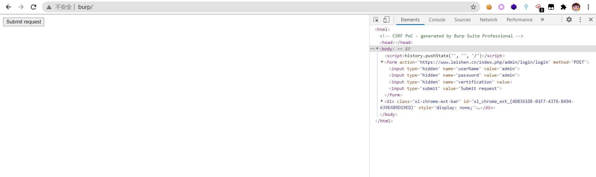
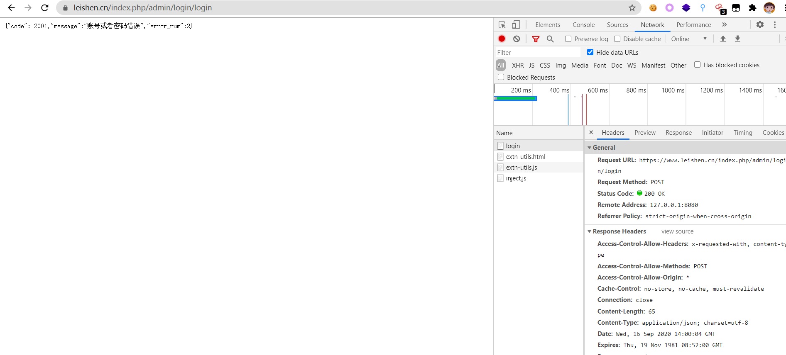
Host 攻击（主机头攻击）
主机标头指定哪个网站或Web应用程序应处理传入的HTTP请求。Web服务器使用此标头的值将请求分派到指定的网站或Web应用程序。
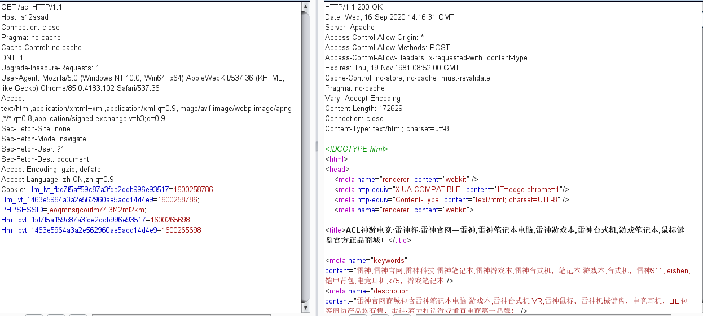
脆弱的Javascript库(javascript跨站脚本)
jQuery 3.4.0 以上版本不受漏洞影响。
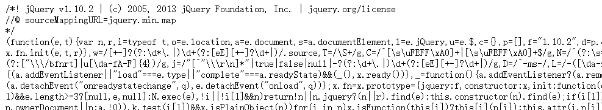
页面上的错误消息
错误信息页面
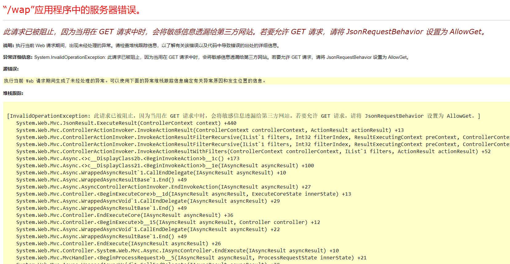
开启TRACE方法
在此Web服务器上启用了HTTP TRACE方法。如果Web浏览器中存在其他跨域漏洞，则可以从任何支持HTTP TRACE方法的域中读取敏感的标头信息。
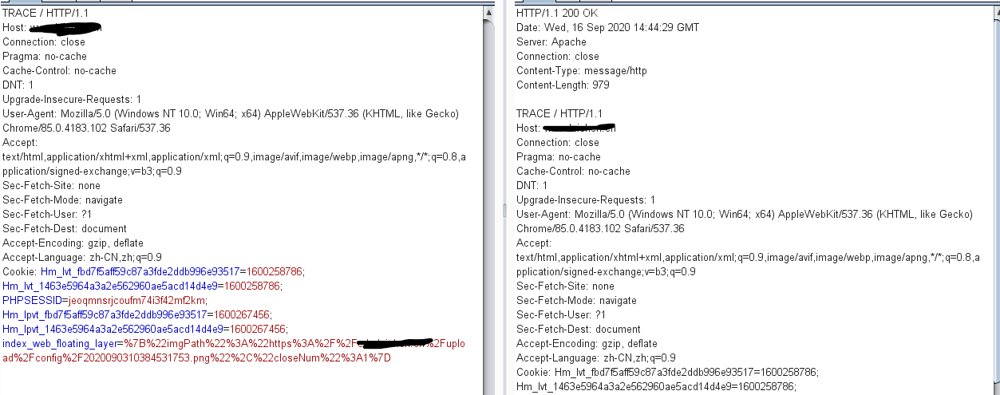
开启options方法
攻击者可利用options方法获取服务器的信息，进而准备进一步攻击。
JetBrains IDE workspace.xml文件泄露
这个漏洞具体是指目录下存在/.idea/文件夹,通过workspace.xml，可直接获取整个工程的目录结构,为后续渗透中收集信息。
jQuery跨站脚本
攻击者使用.hash选择元素时，通过特制的标签，远程攻击者利用该漏洞注入任意web脚本或HTML。在jQuery 1.6.3及之后得到修复。